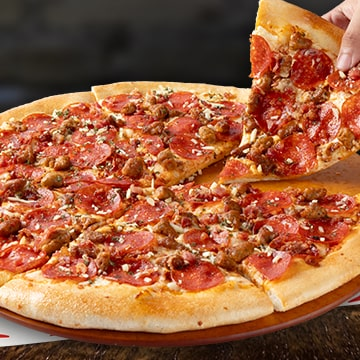
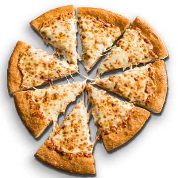
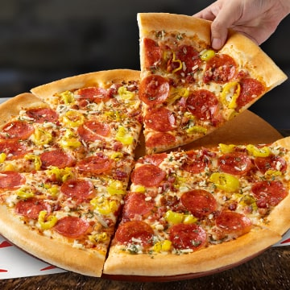
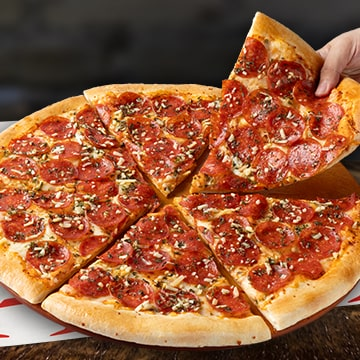

-

4 Seasons
Four different specialties on one pizza: Supreme, Canadian, Pepperoni, and Ham.
Price: $14.99
-

Big New Yorker Meat Trio
A large pizza inspired by the New York style with big slices, featuring three meats: pepperoni, Italian sausage, and bacon bits, topped with mozzarella cheese, a blend of oregano and Parmesan cheese over the ingredients, and garlic butter on the crust.
Price: $16.99
-

Cheese Base Pizzas
Pizza with a cheese base.
Price: $11.99
-

Big New Yorker Bacon & Banana Peppers
A large pizza inspired by the New York style with big slices, featuring pepperoni, bacon bits, and plenty of mild banana pepper slices with a tangy touch. Topped with a blend of oregano and Parmesan cheese over the ingredients, and garlic butter on the crust.
Price: $16.99
-

Big New Yorker Pepperoni Lovers
A large pizza inspired by the New York style with big slices, loaded with plenty of pepperoni and mozzarella cheese. Topped with a blend of oregano and Parmesan cheese over the ingredients, and garlic butter on the crust.
Price: $15.99
-

Super Supreme
Made with pepperoni, beef and pork, Italian sausage, ham, mushrooms, olives, onions, and green peppers.
Price: $17.99